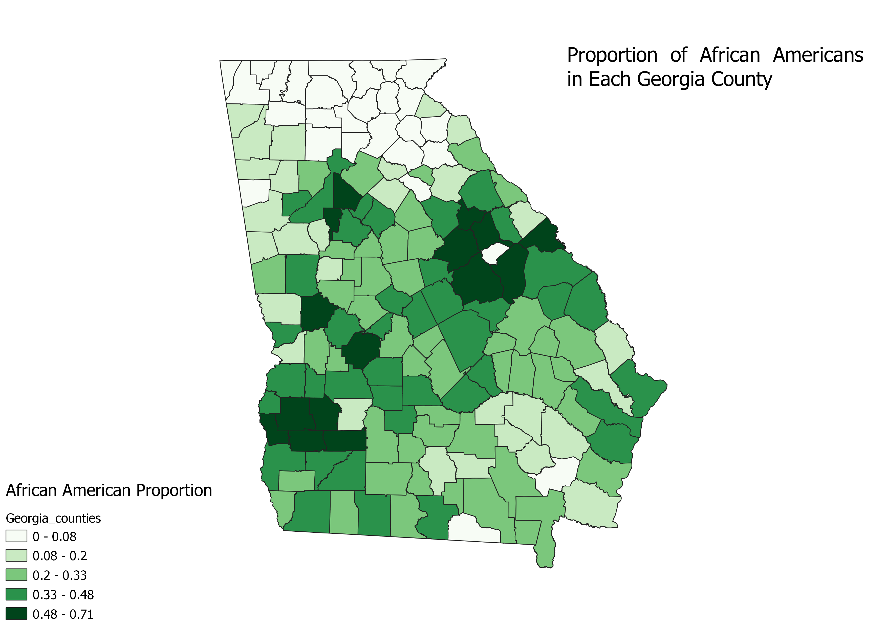

Homework 6: Census data choropleth
Martin "Whit" Jones
This map shows the what proportion of the population is African American in each Georgia county. The data is from the US Census. Counties with higher proportions of the population being African American are closer in proximity, with northern Georgia having a rather low proportion of African American inhabitants.

Data used for this project
CSV Dataset
Link to shapefile